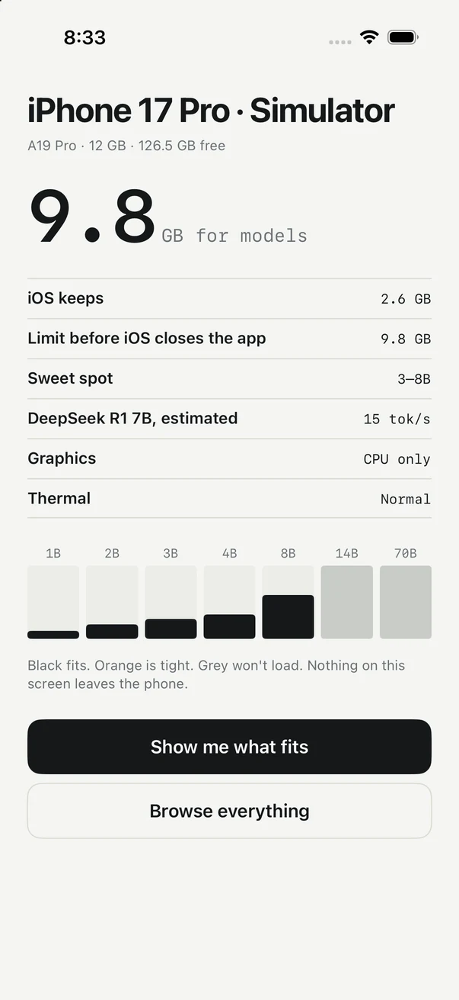
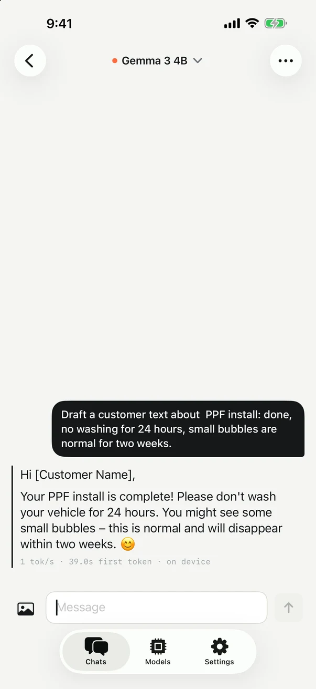
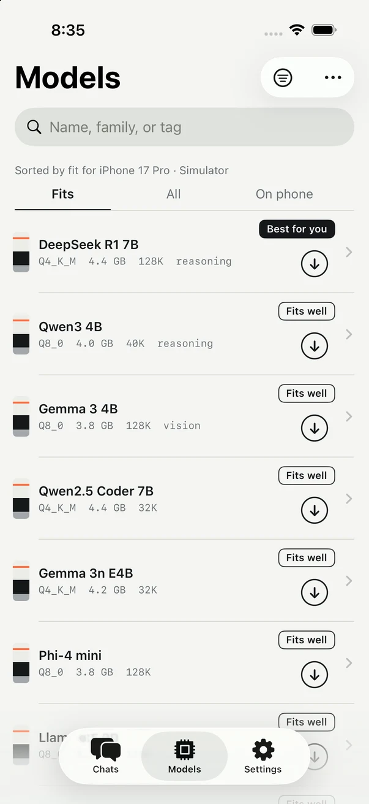
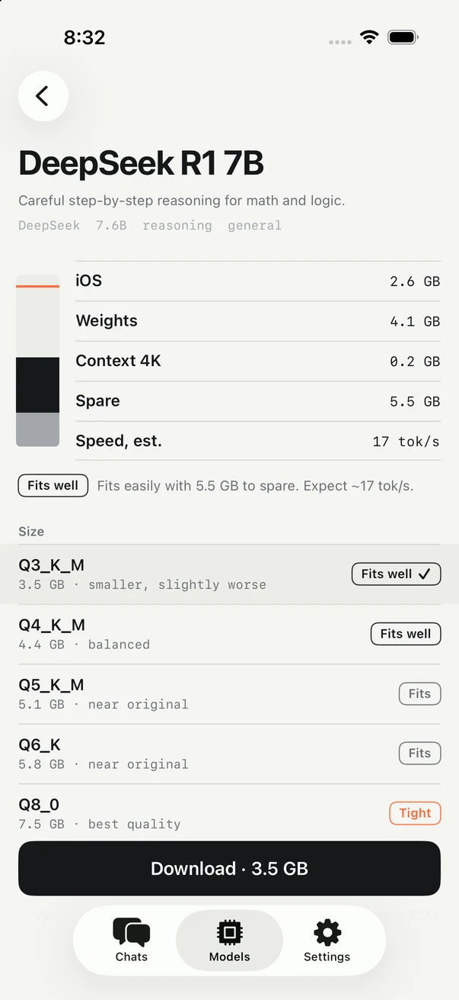
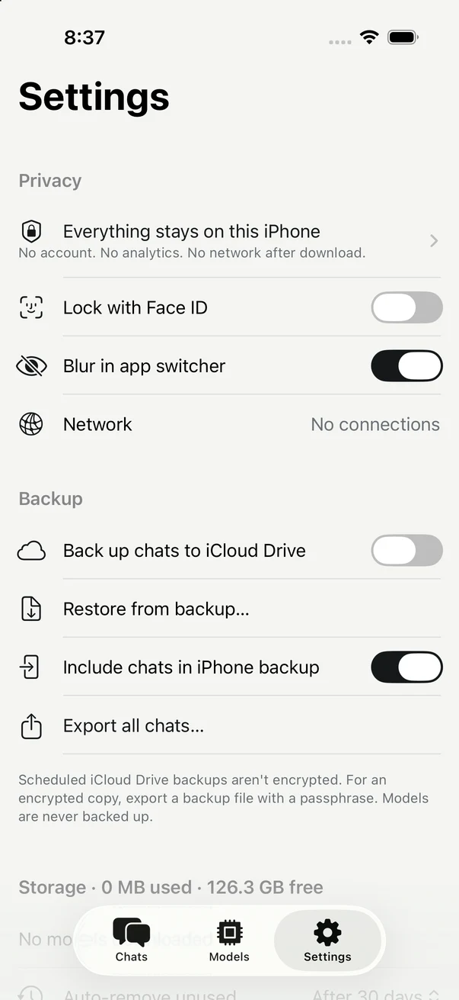

On-device AI for iPhone
Chat with AI that never leaves your phone.
QUIET Ai downloads open models — Gemma, Qwen, DeepSeek, Llama, Phi — and runs them on your iPhone's own chip. No account. No server. Works in airplane mode.


How it works
Three steps. Then it's yours, offline.
QUIET reads your iPhone
RAM, chip, free storage. In under a second it knows how much memory a model can safely use on this phone.
Pick a model that fits
Every model is rated for your device before you download — Fits well, Fits, Tight, or Too big. No guessing, no crashes.
Chat anywhere
Turn on airplane mode. It still works. Your messages are processed by the model on your phone and saved only there.
The memory stack
Know what fits before you download 4 GB.
iPhones give apps a fixed share of memory. QUIET measures it, then shows each model's weight and context against your limit. Black fits. Orange is tight. Grey won't load.
The app
Quiet on the outside, too.



Models
The best open models, one tap away.
Eighteen models from Google, Alibaba, DeepSeek, Meta, Microsoft, Mistral and Hugging Face, with sizes chosen for your phone. Reasoning models show their thinking. Gemma 3 can look at photos. Add any public GGUF from Hugging Face.
Privacy
Not "private". Offline.
- No account, no sign-in, no email.
- No analytics, no crash reporting, no ads.
- The only downloads are the model files you choose, from Hugging Face.
- Chats are stored on your phone. Optional backups go to your iCloud Drive, encrypted with a passphrase if you want.
- Face ID lock and app-switcher blur, built in.
- A Network row in Settings shows every connection the app has open. Usually: none.
Everything QUIET Ai does — reading your device, downloading, chatting, backups — is described in plain language in the privacy policy. It fits on one page.
Pricing
Free to start. One payment to unlock everything.
- One downloaded model at a time
- Unlimited chats
- All models in the catalog
- Face ID lock, exports, backups to your iPhone
- Any number of models on your phone
- Import any public GGUF from Hugging Face
- Scheduled backups to iCloud Drive
- Family Sharing included
Questions
Straight answers.
Which iPhone do I need?
Any iPhone running iOS 26. Small models (1–2B) run on every supported phone; 4B models want 6 GB of RAM or more; 7–8B models are for 8–12 GB phones (15 Pro and later). The app tells you exactly what fits before you download.
Is it really offline?
Yes. After a model is downloaded, turn on airplane mode and keep chatting. The app has one gate that every network request goes through, and it only allows model downloads from Hugging Face, an optional catalog refresh, and the App Store.
How fast is it?
It depends on the model and the chip. A 4B model runs at roughly 25–30 tokens per second on an iPhone 17 Pro, faster than most people read. The app shows an estimate before download and the measured speed after every reply.
Are the answers as good as ChatGPT?
No — these are small models that fit in a phone. They're very good at writing, rewriting, summarizing, explaining, and everyday questions, and reasoning models like DeepSeek R1 and Qwen3 handle math and logic well. They know less about recent events and can be wrong, like any AI.
What happens to my chats?
They live in the app's storage on your phone. They're included in your normal iPhone backup unless you turn that off, and you can export them as Markdown or JSON, or as an encrypted backup file.